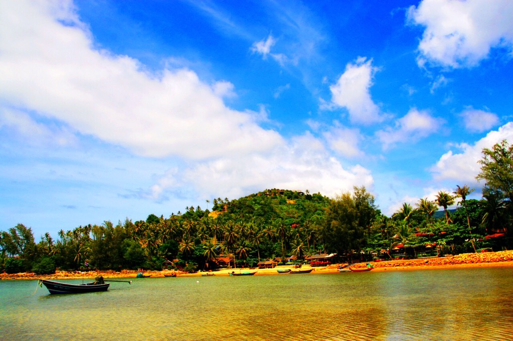

Junya Tsuruda

|

|
|---|
|  |

|

|

|

|
|---|
TABIPPO WORLD 2017 に参加してます！
あらすじTABIPPOとは？
全員が世界一周を経験したメンバーが学生時代に作った団体がTABIPPOです。 設立して4年、2014年
4月に株式会社になりました。「旅で世界を、もっと素敵に」を理念として、 さまざまな活動をしています。
メンバーは全員とにかく旅が大好きで、たくさんの人に旅を広めたい、そう想い活動をしています。
TABIPPOについての詳細は下記のカンパニーサイトをご覧ください。（HP参照）
メコン川に飛び込んだら、象使いになれました。あらすじ 資格が欲しい。資格欲しい。資格欲しい。履歴書の
|
「僕たちは世界を変えることができない」を見て。あらすじ 主人公の田中甲太は医大生2年。ある時ボランティア
|
|---|
カレーの本場で移動式カレーを開業したバカな
あらすじ
|
カレーの本場で移動式カレーを開業したバカな
あらすじ
|
|---|
カレーの本場で移動式カレーを開業したバカな
あらすじ
|
酔っ払いの運転手の車で揺られて幻の湖・
あらすじ
|
|---|
------------Follow Me------------


-------Archive Calender-------
| 2017年3月 | ||||||
| 日 | 月 | 火 | 水 | 木 | 金 | 土 |
| 1 | 2 | 3 | 4 | |||
| 5 | 6 | 7 | 8 | 9 | 10 | 11 |
| 12 | 13 | 14 | 15 | 16 | 17 | 18 |
| 19 | 20 | 21 | 22 | 23 | 24 | 25 |
| 26 | 27 | 28 | 29 | 30 | 31 | |
-------ってか 誰やねん？-------
2015年4月〜2016年1月までの9か月間世界一周に行った人。インドでカレー売ったり、ウォーリーのコスプレしたりして旅してたよ。